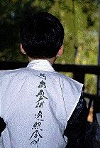
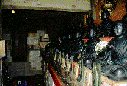
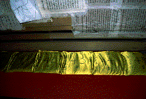
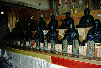
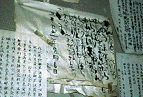
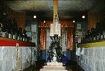
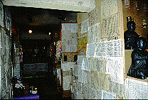
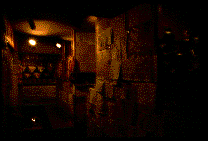
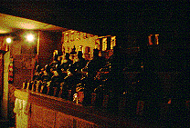

岩槻大師/埼玉県岩槻市
埼玉県の岩槻。普段は絵に描いたような典型的な地方都市だが、3月5月の人形シーズンが到来するとがぜん活気づく人形の街である。そんな人形ラヴァーな街の一画に違った意味での人形（あ、仏像か）ラヴァーな寺が存在する。岩槻大師である。
この寺、建物も新しく一見普通の寺風である。しかし門前から中を見ただけで踵を返すことのないように。良く見れば境内には三十六童子像がずらりと並んでいたりしていて結構「好き者」系の寺であることが窺えるのだ。
そしてその「好き者」具合の真骨頂が本堂下の地下仏殿なのである。
ここの地下仏殿、正式には地下佛殿四国八十八カ所お遍路道場というのだが、その名の通り、四国八十八ケ所の各本尊やら御朱印やらが地下に渦巻いていて大変豪華なラインナップとなっており、まさに人形、もとい仏像ラヴァ−な寺と相成っているのである。
というわけで早速、地下仏殿に入ろうと、寺務所に行き参拝料を支払う。するとそこの坊さん、何やらごそごそと白いモノを取り出し私に手渡す。見れば巡礼用ウェアの何てゆうんですかあの白い衣、アレなのである。背中にはビシッと「南無大師遍照金剛」の8文字が。これは相等かっこいいぞ。巡礼コスプレマニアの方（いるかなあ）には超お勧め。気がつくと隣にいた私の倅（クレヨンしんちゃんと同い年）も坊さんに手伝ってもらいながら巡礼ウェアをビシッと装着。子供用まであるとは、温泉旅館の浴衣じゃないんだから.....

で、その坊さんに連れられて地下仏殿へ。途中、真言についての説明やら聞かされたが何を言っておられたのか全く聞いていませんでした。何度も言うようだが私は信仰の形態に対してはこだわるのだが、教義や宗教そのものにはまったく興味がないもんで、ごめんね。一応相槌は打っといたけど、あーゆーのとか説教とかって苦手〜。
というわけでいよいよ本堂内の左側にある地下仏殿への階段を降りる。するとそこは真っ暗な通路、所謂戒壇巡りになっていた。そしてその暗い通路を抜けるといよいよ地下仏殿のメインスペースだ。
  
そこは1メートル程度の通路が「日」の字型になっており、その通路に沿って八十八ケ所のお砂がはいった座布団と弘法大師像がずらりと並んでいるのだ。そしてその上には各本尊のレプリカや御朱印なども。
地下仏殿といえば以前紹介した玉川大師をイメージしていたのだが、そこは昭和53年に建てられたものだけあって、玉川大師のような神秘的な雰囲気は無い。しかし壁に隙間なく貼られたお経の写しが一種異様なオーラを醸し出している。中には弘法大師の似顔絵や明らかに子供が写経したと思われる平仮名のド下手なあいだみつを風のお経なんかがちらほら見えてグッと来る。
  
これらのオーラが渦巻く地下仏殿、地下という事もあってシーンとしている。換気扇の音がやけに耳に付く。この換気扇、湿気は取ってもこの異様な雰囲気は吐き出せないようだ。ジトーっと湿気にも似たバッドオーラが封印される地下仏殿であった。
 
1999.2
追記；以前、境内に十二神将がいるとの記述がありましたが三十六童子の誤りでした。訂正し、おわびします。
岩槻大師のホームページはこちら
珍寺大道場 HOME